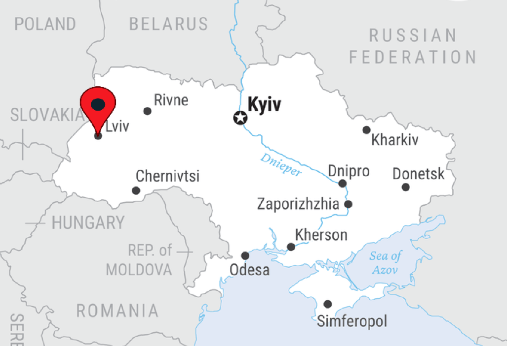
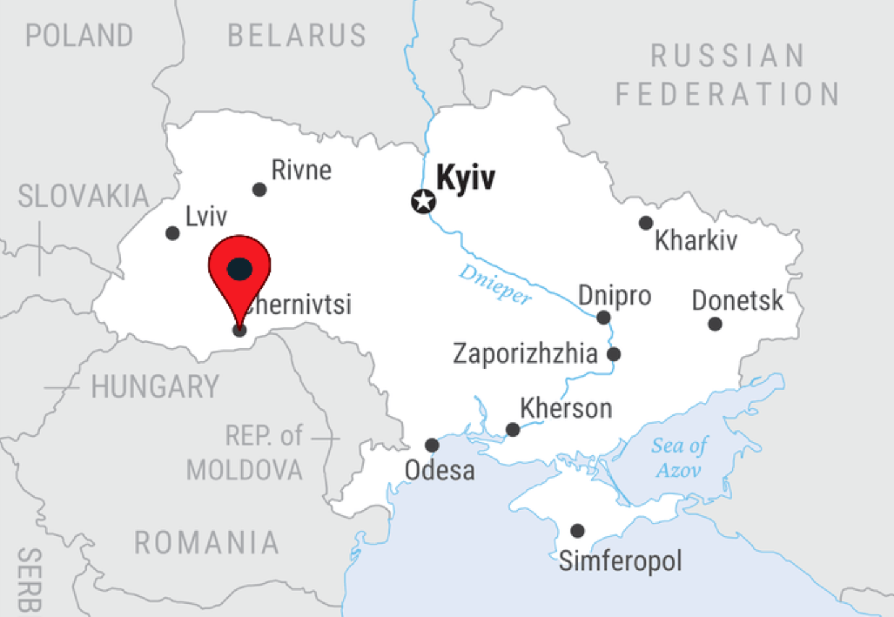
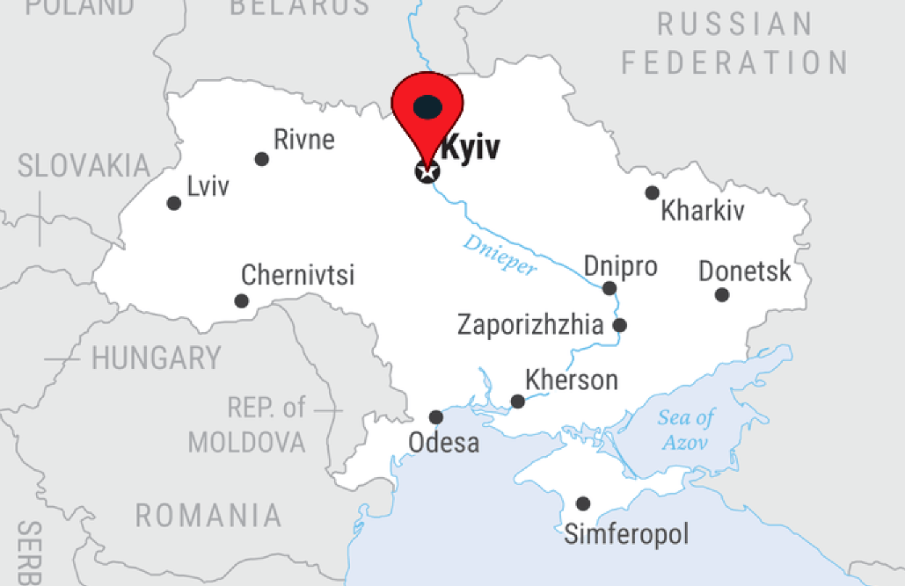
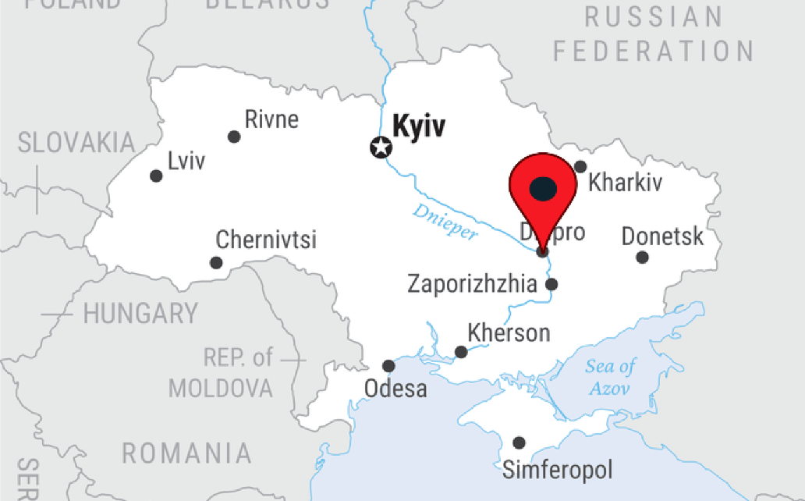
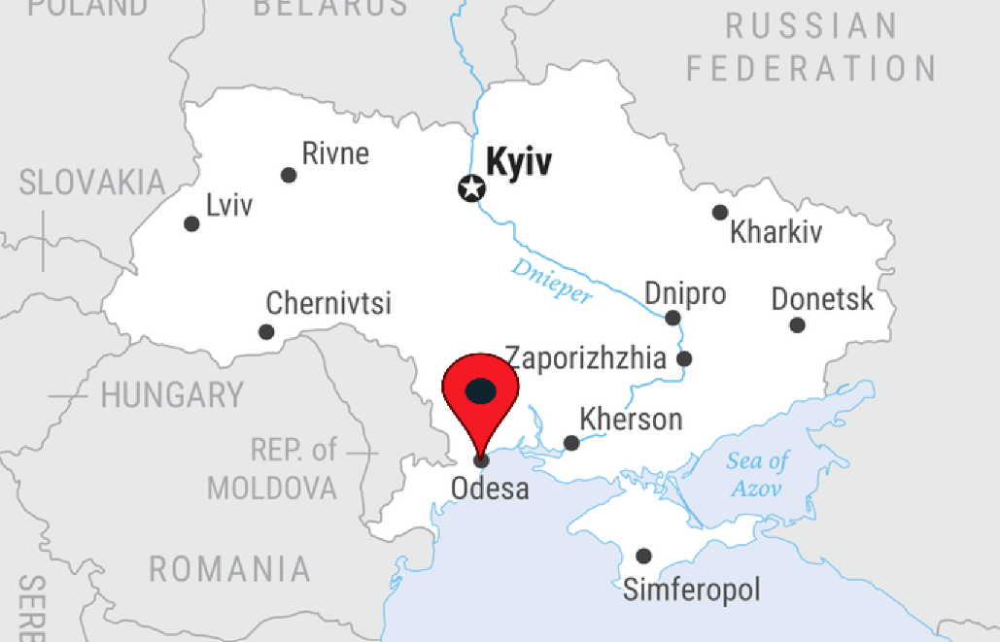
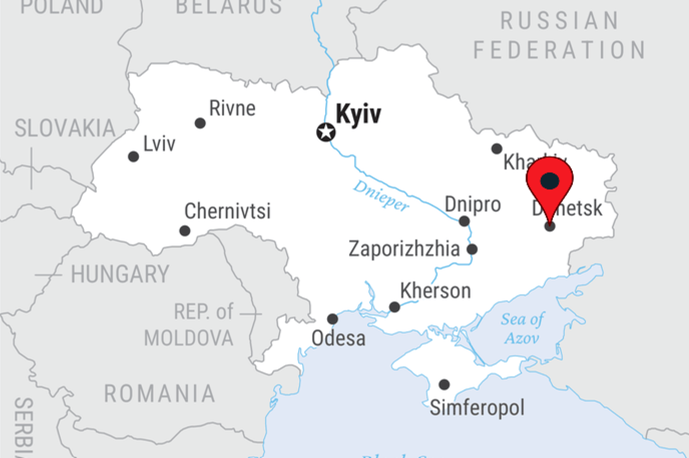

Державна влада
Державне управління
Інформація про систему державної влади України, її структуру, повноваження та діяльність основних державних інституцій.
- Президент України
- Верховна Рада України
- Кабінет Міністрів
- Судова система
Політика. Держава. Суспільство.
Інформаційно-аналітичний простір для тих, хто прагне краще розуміти політичні процеси, державне управління та суспільне життя України.
«Пульс України» — це інформаційно-аналітичний портал, присвячений політичному життю України, діяльності державних інституцій та суспільним процесам.
Наша мета — зробити інформацію про державне управління, законодавство та політичні процеси зрозумілішою й доступнішою для громадян. Ми прагнемо пояснювати складні політичні питання простою мовою та допомагати читачам орієнтуватися в суспільному житті.
Портал охоплює діяльність органів державної влади, законодавчі ініціативи, політичні дослідження та важливі суспільні питання.
Державне управління
Інформація про систему державної влади України, її структуру, повноваження та діяльність основних державних інституцій.
Правова система
Ознайомлення із законодавчими процесами, новими нормативно-правовими актами та державними реформами.
Політика та суспільство
Дослідження політичних процесів, діяльності політичних організацій та актуальних суспільних питань.
Ознайомлення з основними державними установами, символами та інституціями України.






Маєте пропозиції, зауваження або бажаєте повідомити про помилку на порталі? Зв'яжіться з адміністрацією сайту.
Електронна пошта: your-email@example.com